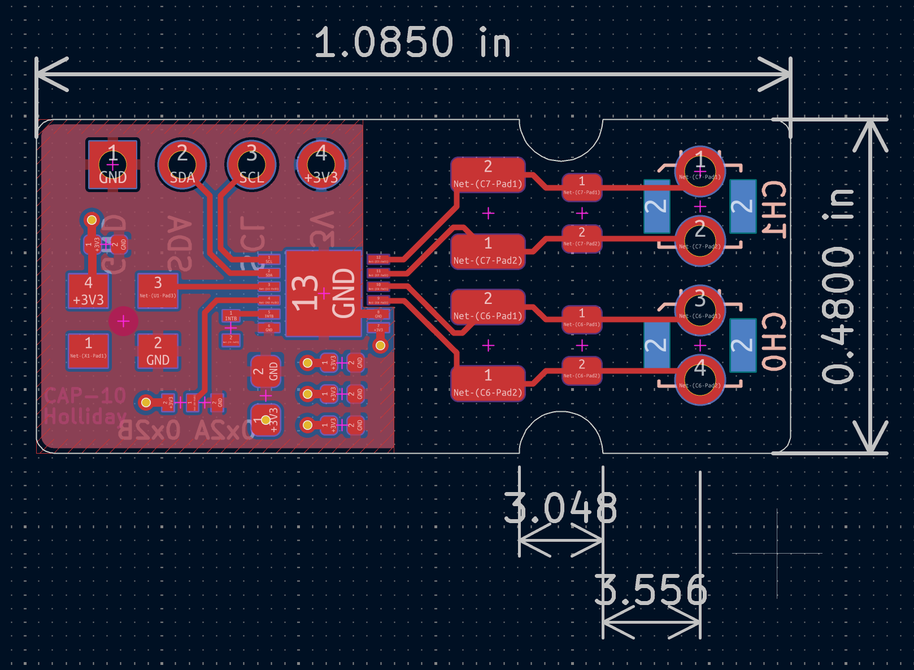
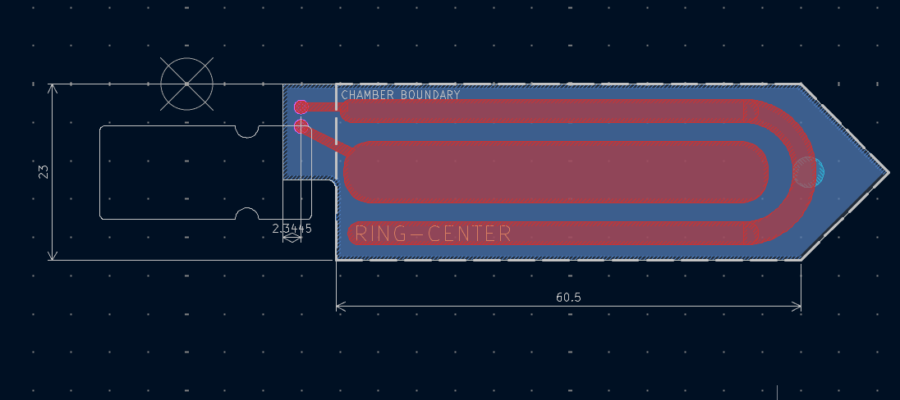
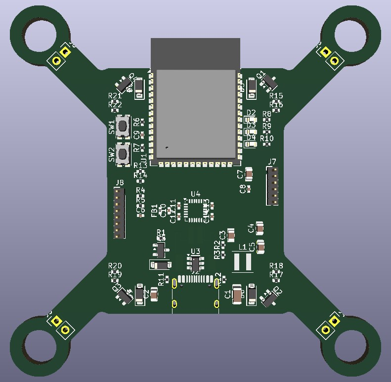
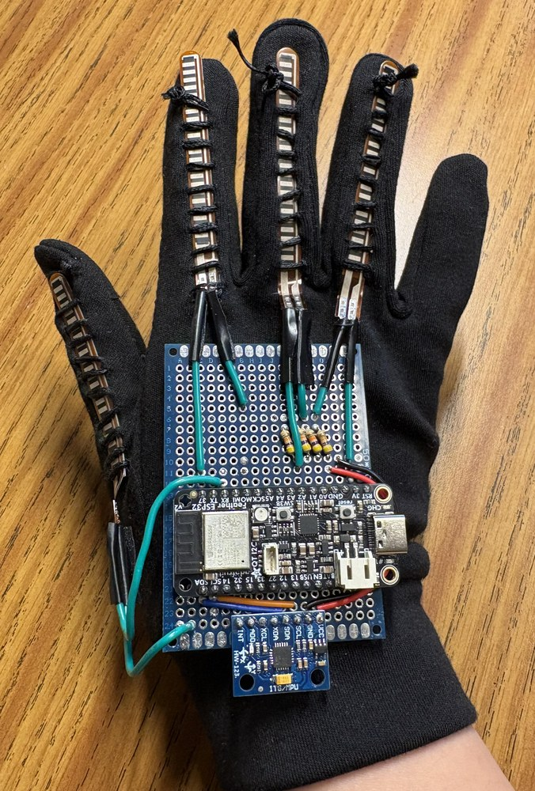

BuiltElectrical Engineering Intern · Spring 2026 – present
Role
Schematic, layout, assembly
Boards
Readout board, 1.1 × 0.5 in Two-electrode probe, 60.5 × 23 mm
Sensing
LC tank per channel, capacitance-to-digital converter, crystal oscillator reference
Interface
I2C to a microcontroller over a 4-pin header (3.3 V, GND, SDA, SCL)
Tools
KiCad, OnShape, 3D printing, soldering
DropSense, a spinout from Stanford's Tarpeh Lab, is building a small, low-cost sensor for nitrogen in wastewater. I designed the electronics that turn the sensor's capacitance into a number a microcontroller can read.
The probe's two electrodes form part of an LC tank. When the capacitance around the probe changes, the tank's resonant frequency shifts. A capacitance-to-digital converter counts that frequency against an external crystal oscillator and holds the result for the microcontroller to read over I2C.
Design decisions
Kept sensor traces short and clear of ground copper, since every bit of stray capacitance shows up as offset and noise.
Placed the oscillator right next to the converter so the clock trace stays short and away from the sensor inputs.
Put decoupling capacitors at each chip's supply pin.
Designed a spring-loaded pogo-pin interface and a 3D-printed alignment fixture, so disposable sensor strips swap in seconds without soldering.
Separately, designed and 3D-printed several iterations of a compact chamber that shrinks the lab's electrochemical ammonium sensor into a portable form.

Readout board layout. Header and oscillator on the left, converter in the middle, the two LC channels (CH0, CH1) on the right.

Probe layout. An outer ring electrode wraps the center electrode inside the marked chamber boundary.
Stanford UAV Club · Skyrunners team
Custom microdrone flight controller
In designTechnical Lead · Oct 2026 – present (Systems Engineer since Sep 2025)
Role
Technical lead for the team
Board
Flight controller PCB shaped as the drone's frame, motor mounts in its arms
Parts
ESP32-S3, MPU-6050 IMU, MOSFET drivers for four brushed motors, buck-boost regulator, 1S LiPo
Tools
KiCad
I lead the Skyrunners team in Stanford's UAV club, building a micro drone whose custom flight controller PCB doubles as the frame. The motors mount directly into the board's arms, so there is no separate frame to build or carry.
Because the board is the airframe, the electrical and mechanical decisions are tied together: where the IMU sits relative to the spinning motors, how motor current shares the battery with the logic, and how stiff the board needs to be to keep vibration out of the sensor readings.

Work in progress: the board placed in KiCad, shown in 3D. The ESP32-S3 antenna hangs past the front edge, the IMU sits near the center of rotation, and motor wire pads sit at the end of each arm. Routing is next.
Before this
As a systems engineer on the team's fixed-wing autonomous aircraft, I designed and tested fuselage and structural components, and planned the payload layout and vibration-isolating sensor mounts from center-of-gravity analysis.
A project I built for fun over Summer 2026, working on it in the evenings after my day job at DropSense. It's a glove that flies a camera drone with hand movements. Four flex sensors sewn along the fingers measure how far each one bends, read through the ESP32's ADC, and an IMU on the wrist measures roll and pitch. Firmware on the ESP32 turns the hand shape and wrist tilt into flight commands and sends them to the drone over Wi-Fi.
A switch on the glove moves it into computer mode. There, glove data streams over USB serial to a Python program that flies the drone and shows its live camera feed, processed with OpenCV. MediaPipe tracks my other hand in the video, and an open left palm triggers a flip that overrides the glove.
The full flight with the glove: takeoff, flying left and right, turning in place, holding position, and landing. Shown at 1.75× speed.

The glove: four flex sensors stitched along the fingers, an ESP32 Feather on a hand-soldered protoboard, and the MPU6050 at the wrist.Live sensor readings while testing: the flex-sensor curves dip as each finger bends, then the bottom two lines spike as the wrist tilts and the IMU responds.
Gestures
Hand
Wrist
Drone
Open palm
Any (drone on the ground)
Calibrates the IMU, then takes off
Open palm (drone in the air)
Tilt forward / back Tilt left / right
Climbs / descends Turns left / right
Fist
Tilt forward / back Tilt left / right
Flies forward / back Flies left / right
Peace sign
Any
Lands
Any
Level (under 35°)
Holds position
What I built
Soldered and debugged the protoboard on the back of the glove that ties the sensors to the ESP32.
Wrote the firmware that reads the sensors and maps gestures to commands.
Wrote the Python control program and the computer-vision gesture override.
CS107E · Computer Systems from the Ground Up · Coursework
Bare-metal RISC-V system
CompleteSpring 2026
Board
Mango Pi MQ-Pro (Allwinner D1-H, RISC-V)
Languages
RISC-V assembly, C
Runs on
No operating system
Over one quarter I built up a working computer system from nothing but the hardware: first blinking LEDs from assembly, and by the end a keyboard-driven shell with a graphics console, all running without an operating system.
Drove GPIO through memory-mapped registers in RISC-V assembly, starting with a Larson scanner.
Built a heap allocator with 8-byte-aligned blocks and guard-byte red zones that catch buffer overflows, plus a frame-pointer stack backtrace for debugging crashes.
Wrote a PS/2 keyboard driver that decodes raw scancodes, including make/break codes and modifier keys.
Built a shell with line editing and a framebuffer graphics console, then tied everything into one interrupt-driven system with a ring buffer so no keystrokes are dropped.
CS107E final project · Mango Pi, no operating system
mango-run
PlayableSpring 2026
Board
Mango Pi MQ-Pro (RISC-V)
Input
MPU-6050 accelerometer over bit-banged I2C at 400 kHz, read every frame
Display
640 × 480 double-buffered framebuffer over HDMI
Built on
My own graphics and framebuffer libraries from the course
Language
C
A pixel-art runner inspired by the offline dinosaur game, built on the graphics library I wrote during CS107E. You play it with your body instead of a keyboard: in the final version, you strap the box with the accelerometer to your body, and a real jump makes the runner jump over a cactus. Mangos float overhead as collectibles, the high score carries across rounds, and hitting a cactus brings up a game-over screen that holds for five seconds before the next round starts.
A test run: jumping in real life to clear a cactus on screen, holding the purple box with the accelerometer. In the final version, the box straps onto your body.On screen: the runner, cacti, and mangos scroll by as the score climbs past the high score.
The sprites, drawn on this page straight from the pixel maps and palettes in game.c. In the game each cell is a 4 × 4 block.
How it works
Sprites are small palette-indexed maps (8 × 8 for the runner, 7 × 10 for a cactus) drawn as scaled rectangles, with index 0 left transparent.
Each frame reads the accelerometer, applies gravity and the jump velocity, scrolls and spawns obstacles from fixed-size pools, redraws into the back buffer, and swaps it to the screen. A timer holds every frame to the same length.
Collision detection reads pixels out of the framebuffer: for each solid pixel of the runner, it checks the pixel one step ahead for cactus green.
A detected jump is latched until the runner lands, so one real jump produces exactly one jump on screen.
Debugging it
Most of the work was bringing it up on bare metal, where a crash just leaves the board blinking. I traced faults with UART prints between each step. That turned up peripherals set up in the wrong order, a collision check reading the wrong buffer after a swap, and a loop that was quietly clearing cactus slots so only two ever appeared.
game.c · moving and spawning obstacles
// advances all obstacles, removes ones that go off screen, and spawns
// new cacti and mangos at their respective rates
static void update_world() {
for (int i = 0; i < MAX_CACTI; i++) { // move cacti
if (!cacti[i].on_screen) continue;
cacti[i].x -= world_speed;
if (cacti[i].x < CACTUS_W * -1) { // off screen
cacti[i].on_screen = false;
}
}
for (int i = 0; i < MAX_MANGOS; i++) { // move mangos
if (!mangos[i].on_screen) continue;
mangos[i].x -= world_speed;
if (mangos[i].x < MANGO_W * -1) {
mangos[i].on_screen = false;
}
}
if (frame_counter % CACTI_RATE == 0) { // spawn a cactus into a free slot
for (int i = 0; i < MAX_CACTI; i++) {
if (!cacti[i].on_screen) {
cacti[i].x = SCREEN_W;
cacti[i].on_screen = true;
break;
}
}
}
if (frame_counter % MANGO_RATE == 0) { // spawn a mango into a free slot
for (int i = 0; i < MAX_MANGOS; i++) {
if (!mangos[i].on_screen) {
mangos[i].x = SCREEN_W;
mangos[i].on_screen = true;
break;
}
}
}
}
game.c · drawing a sprite from its map
// draws a sprite with a scale at px, py by iterating over a sprite map
// and drawing the colors in the corresponding palette
static void draw_sprite(int px, int py, const unsigned char *sprite,
int rows, int cols, const color_t *palette) {
for (int r = 0; r < rows; r++) {
for (int c = 0; c < cols; c++) {
unsigned char index = sprite[r * cols + c];
if (index != 0) {
gl_draw_rect(px + c * SCALE, py + r * SCALE,
SCALE, SCALE, palette[index]);
}
}
}
}
Earlier work
University of Washington · 2022 – 2025
Metamaterial and photonics research
Research assistant to Prof. Wei-Chih Wang. Simulated fishnet metamaterial structures in CST Studio, analyzing field distributions near resonance to find geometries with a negative refractive index. Built a fiber-optic Fabry–Pérot interferometer with a piezoelectric actuator and measured it with photodetectors and an oscilloscope.
MIT THINK finalist · 2023 – present
Low-cost ballistic backpack insert
Selected as an MIT THINK finalist (top <1%) and awarded $1,000. Designed an insert that uses its geometry, rather than layered composites, to dissipate impact energy. Live-fire tested prototypes with a local police department and used the failures to refine the design; now working with a manufacturer toward production.
Toolbox
Hardware
Schematic capture and PCB layout in KiCad, soldering and board assembly, oscilloscope, multimeter, logic analyzer